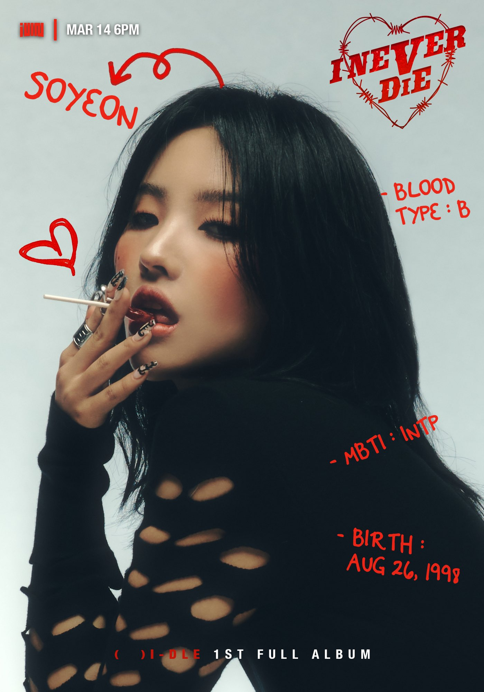
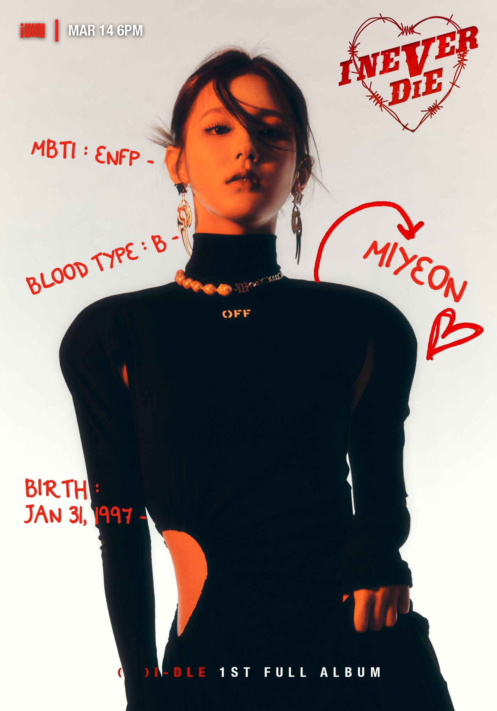
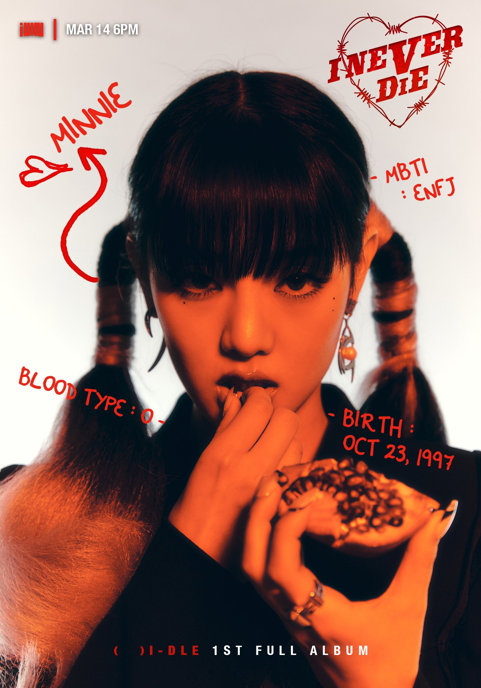
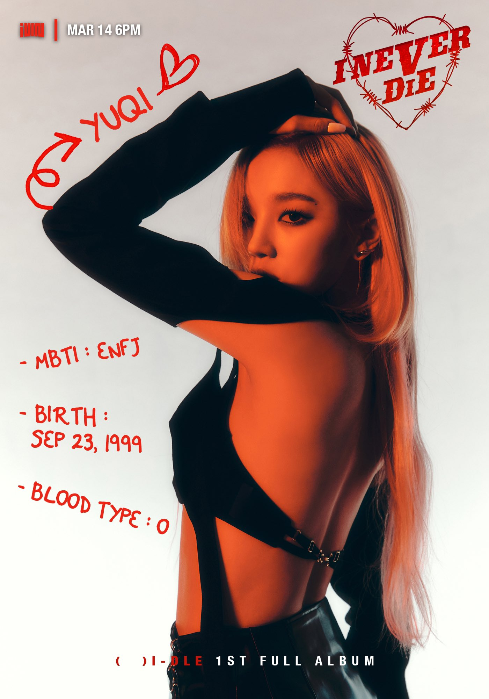
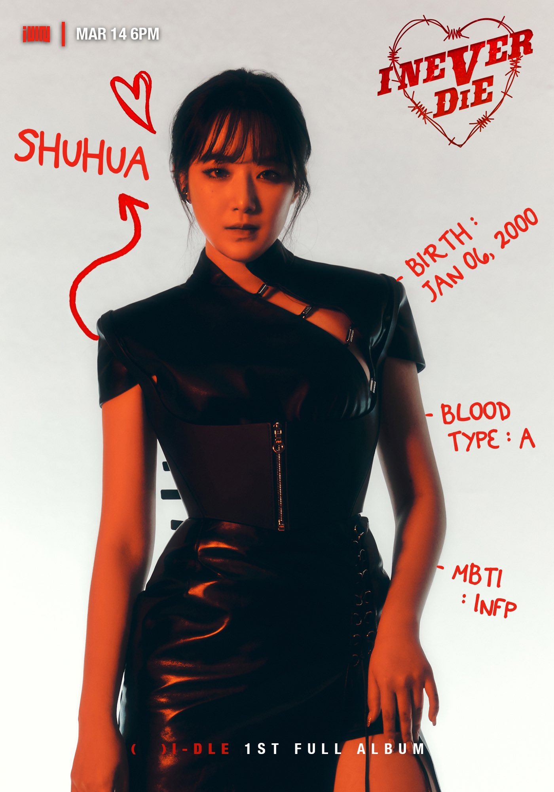
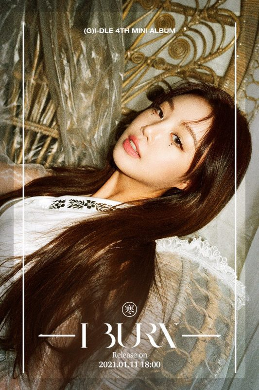

(G)I-DLE Members Profile:
Soyeon

Stage Name: Soyeon (소연)
Birth Name: Jeon So Yeon (전소연)
Position: Leader, Main Rapper, Sub Vocalist, Center
Birthday: August 26, 1998
Zodiac Sign: Virgo
Height: 157 cm (5’2″)
Weight: 44 kg (97 lbs)
Blood Type: B
MBTI Type: INTP
Nationality: Korean
Instagram: @tiny.pretty.j
Soyeon Facts:
– Was a participant on Produce 101. She placed 20th in the last episode.
– Joined Unpretty Rapstar 3. She placed 3rd.
– Education: Highschool
– Her hobby is watching anime (she especially likes “One Piece”).
– She likes tangerines and corn and hates vegetables.
– Known for her rapping skills.
– Also a good singer. She was praised for her singing while recording for a mission in PD101.
– Trained for 1 year and 6 months before joining PD101.
– Soyeon signed a contract with CUBE around December 2016.
– Introduced in CUBE TREE
– Soyeon was homeschooled as a child.
– Soyeon used to do ballet.
– First debuted as a solo-artist on November 5, 2017 with her digital single “JELLY” which was written, composed and arranged by herself.
– Participated in composing the songs in their debut album ‘I AM’
– Soyeon wrote, produced and arranged CLC‘s “No”.
– Favorite color is Yellow
– Loves Mint Chocolate
– Audition piece: G-Dragon’s “This Love”
– Big Bang inspired her to be an artist
– Soyeon composed, arranged and wrote the lyrics for “HANN”.
– She is part of SM Station X girl group project: Seulgi x SinB x Chungha x Soyeon.
– She’s currently in League of Legends ‘group’ called K/DA.
– Soyeon and Miyeon are roommates.
– Her ideal type would be Zoro from “One Piece”.
Miyeon

Stage Name: Miyeon (소연)
Birth Name: Cho Mi Yeon (조미연)
Position: Main Vocalist, Visual
Birthday: January 31, 1997
Zodiac Sign: Aquarius
Height: 161 cm (5’3″)
Weight: 45 kg (99 lbs)
Blood Type: B
MBTI Type: ENFP
Nationality: Korean
Instagram: @noodle.zip
Miyeon Facts:
– Miyeon is an only child.
– Education: Highschool (Passed Korea’s GED)
– Was known to be a YG Trainee (she left YG in mid-2015).
– Joined YG the same time as BlackPink’s Jennie.
– Supposed to debut with BlackPink.
– She supposedly dated former Mix&Match Contestant Jinhyeong.
– Loves nail arts.
– She is left-handed.
– Miyeon’s father made her enjoy music.
– It was in Middle School when she auditioned for the first time in her life.
– She also attended media class because she was very interested in writing lyrics and composing songs.
– Miyeon knows how to play the violin and piano.
– Foot size is 225-230.
– Favorite color is green.
– Miyeon is close to both of Fromis_9 members Jiwon and Seoyeon.
– She introduced herself as (G)I-dle’s POWER VOCAL.
– She’s currently in League of Legends ‘group’ called K/DA.
– Miyeon and Soyeon are roommates.
Minnie

Stage Name: Minnie (민니)
Birth Name: Nicha Yontararak (ณิชา ยนตรรักษ์)
Korean Name: Kim Min Hee (김민희)
Position: Main Vocalist
Birthday: October 23, 1997
Zodiac Sign: Scorpio
Height: 167 cm (5’6″)
Weight: 45 kg (99 lbs)
Blood Type: O
MBTI Type: ENFJ
Nationality: Thai
Instagram: @min.nicha
Minnie Facts:
– Minnie has older twin brothers, named Mic and Mac.
– Education: Wattana Wittaya Academy
– Rising Star Cosmetics Model.
– Friends with CLC’s Sorn and with BlackPink’s Lisa who are also Thai.
– Can speak Korean, English and Thai.
– When Minnie was still in school, she was in a photography club.
– Hobby: Shopping.
– Minnie loves green tea. (“Let’s Dance: (G)I-DLE – LATATA”)
– Participated in the LINE FRIENDS DANCE PARTY.
– Appeared on PENTAGON MAKER.
– Was Introduced in CUBE TREE on March 23, 2016
– Left-handed
– Audition piece: Sweater Weather by The Neighbourhood
– Favorite Color is Pink
– Minnie is a fan of Super Junior.
– Minnie and Sorn of CLC went to the same singing school in Thailand called G-Vocal.
– She is in a Thai group chat with Bambam (GOT7), Nichkhun (2PM), Sorn (CLC), Lisa (Blackpink) and Ten (NCT).
– She introduced herself as (G)I-dles’s ATTRACTIVE VOICE.
– Minnie Is a really big fan of Troye Sivan.
– Minnie and Yuqi are roommates.
Yuqi

Stage Name: Yuqi (우기)
Birth Name: Song Yu Qi (宋雨琦/송우기)
Korean Name: Song Woo Gi (송우기)
Position: Lead Dancer, Sub Vocalist, Sub Rapper, Face of the Group
Birthday: September 23, 1999
Zodiac Sign: Libra
Height: 162 cm (5 ft 3¾ in)
Weight: 43 kg (94 lbs)
Blood Type: O
MBTI Type: ESFJ (Her previous result was ENFJ)
Nationality: Chinese
Instagram: @yuqisong.923
Yuqi Facts:
– Yuqi was born in Beijing.
– Yuqi is a only child.
– Education: Beijing 101 High School (Leave of absence)
– Rising Star Cosmetics Model
– Speaks English, Korean, and Chinese. (YuQi’s introduction video)
– Her hobbies are dancing and rapping.
– Yuqi likes pickled radish. (“Let’s Dance: (G)I-DLE – LATATA”)
– Appeared in Rising Legends CUBE x SOOMPI Promotional Video
– Audition for CUBE auditions on October 2014
– Used to be president of the Street Dance Club of her High School
– Was Introduced in CUBE TREE on August 23, 2017
– Watched a lot of Running Man before coming to Korea
– Yuqi can play the guzheng (chinese cithara).
– Loves meat, especially jokbal (pigs feet)
– Yuqi is a fan of NBA player LeBron James
– Introduced herself as (G)I-dle’s CUTIE
– Yuqi is a fan of Super Junior and her bias is Ryeowook (“Supertv Season 2 Ep. 6”)
– Yuqi has been nominated for “Most 100 Beautiful Faces of 2018″, representing China
– Yuqi has been casted as a new member of China’s Running Man”.
– Yuqi and Minnie are roommates.
– Yuqi debuted as a soloist on May 13, 2021 with single album “A Page”.
Shuhua

Stage Name: Shuhua (슈화)
Birth Name: Yeh Shuhua (葉舒華)
Korean Name: Yoo Su Hwa (유수화)
Position: Sub Vocalist, Visual, Maknae
Birthday: January 6, 2000
Zodiac Sign: Capricorn
Height: 161 cm (5’3″)
Weight: 45 kg (99 lbs)
Blood Type: A
MBTI Type: INFP
Nationality: Taiwanese
Instagram: @yeh.shaa_
Shuhua Facts:
– Rising Star Cosmetics Model
– Education: Hwa Kang Arts School (Leave of absence)
– Can speak Chinese and Korean
– Her hobby is acting.
– Shuhua hates strawberries and likes chocolate. (“Let’s Dance: LATATA”)
– Appeared in Rising Legends CUBE x SOOMPI Promotional Video
– She said she’d like to be like HyunA (RISING STAR COSMETICS MODEL)
– Was featured in 10cm’s ‘PET’ MV together with Yoo Seonho
– She knew Kpop through her friends.
– From wanting to be an actress, she then wanted to be a singer. She was in middle school back then.
– Hyuna inspired her to be an artist.
– Auditioned on Cube Audition in Taiwan on 2016
– Shuhua participated in the audition because her friends wanted to be idols and she followed them.
– Wants to travel when she becomes an adult
– Introduced herself as (G)I-dle’s VISUAL MAKNAE
– Shuhua and Soojin used to be roommates, but they have their own rooms now. (I-TALK Ep. 9)
Former Member:
Soojin

Stage Name: Soojin (수진)
Birth Name: Seo Su Jin (서수진)
Position: Main Dancer, Sub Vocalist, Sub Rapper
Birthdate: March 9, 1998
Zodiac Sign: Pisces
Height: 163.8 cm (5’4″)
Weight: 43 kg (94 lbs)
Blood Type: O
MBTI Type: ISFP
Nationality: Korean
Soojin Facts:
– Was Introduced in CUBE TREE on September 9, 2017
– Education: Korea Arts High School
– Learned Jazz Dance ever since she was little because her mom told her so.
– Soojin took Jazz Dance classes.
– Soojin used to do Taekwondo.
– Soojin’s father didn’t want her to become an idol but she begged him for 2 years.
– Soojin studied at Korean Arts High School.
– Soojin was casted when she was in third year.
– She became a trainee on 2016.
– Soojin’s nickname is cherry. (vLive)
– Soojin is the “mom” in the group because she takes care of members like a mom
– She can cook really well
– Soojin was the fox girl that appeared in Soyeon‘s ‘Jelly’ MV and ‘Idle Song’ MV.
– Was about to debut with the girl group VIVIDIVA (debuted 2015, disbanded 2016). She even performed once with them. Her stage name was N.NA
– Audition piece: Boa’s No.1 song
– Introduced herself as the “Pretty Spring girl”.
– Soojin is the shyest member.
– On August 2nd 2018, Cube has confirmed that Soojin and Hui from Pentagon used to date but they’ve broken up.
– Soojin and Shuhua used to be roommates, but they have their own rooms now. (I-TALK Ep. 9)
– On August 14, 2021, Cube Ent. announced her departure from (G)I-DLE.